本作品是一个LCR测量仪，可以在10Hz-10kHz内几乎任意频点测量待测元件的复阻抗并自动计算串并联等效阻容感。此外还支持双端口网络幅频特性和相频特性测量，以及10Hz-10kHz正弦波发生器功能。本作品可以将测量得到的数据通过BLE发送到专用网页上进行可视化展示，同时网页也具备单端口网络拟合功能，可以通过多频点扫频数据拟合出等效电路结构。
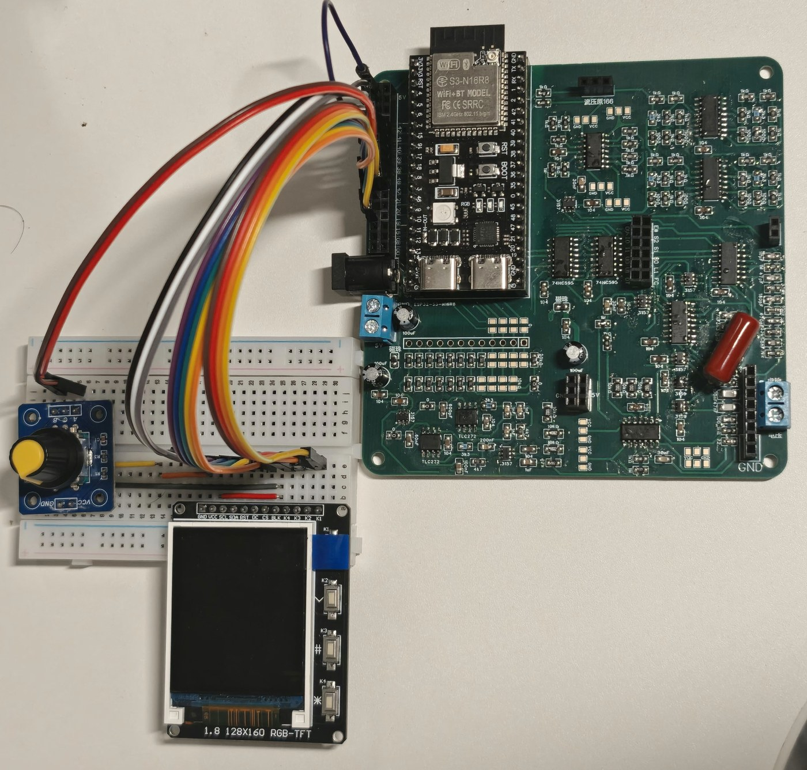
上电后，仪器将显示菜单界面，可以通过编码器旋转或上下按钮调节菜单选项，并通过确定按钮选择选项。此后，仪器将进入频率调节界面，此时可通过上下按钮选择要更改的位，并通过编码器旋转增减该位的数字。K3为返回按键，可以返回上一级菜单或停止测量。
功能1是未知元件判断，仪器将在用户指定的范围内扫描5个频点，分别测量，并根据5个频点中占多数的特性（容性/感性/阻性）定性此元件。
功能2是单频点测量，仪器将在给定的频点进行测量，其中自动切换从22欧姆至1M欧姆的10个跨阻放大档位以及从1到33的4个电压电流放大档位以获取不削顶失真的最大峰峰值，并给出串并联阻容感值等数据。
功能3、4是单端口阻抗扫频测量和双端口波特图扫频测量，用户输入始末频率以及扫频密度，仪器将自动扫频测量并在结束后显示上传界面。上传时将启动BLE并将数据传到网页上进行可视化展示，BLE将在上传完毕后自动关闭以防影响测量。
功能5是正弦信号发生，仪器将以确定按钮为输出启停按钮，按照用户输入的频率输出正弦波。
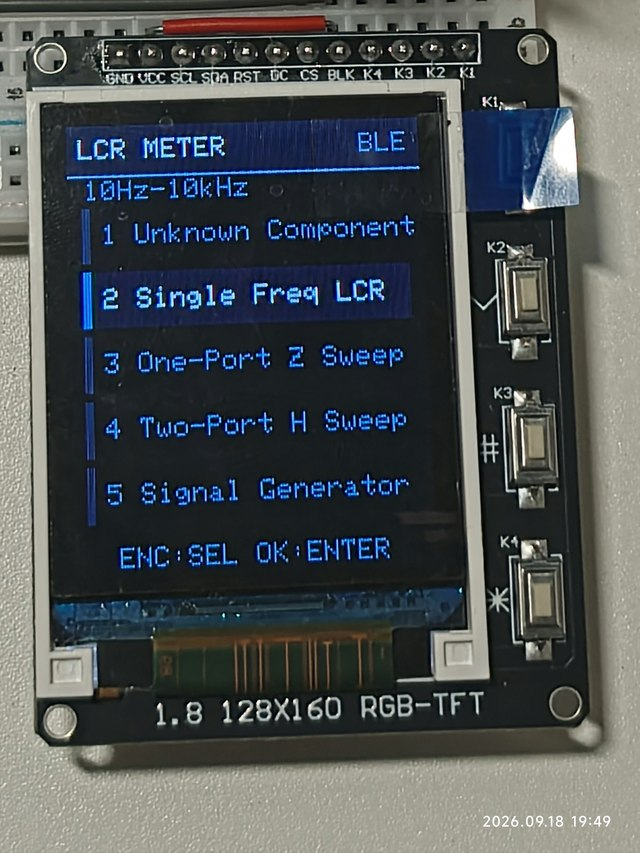
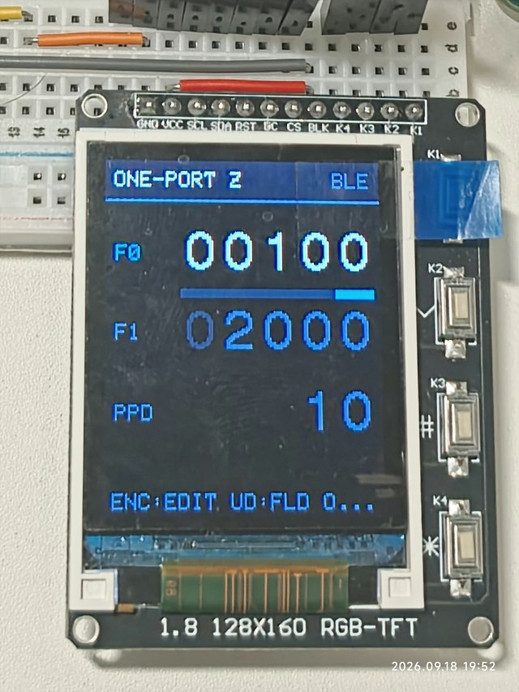
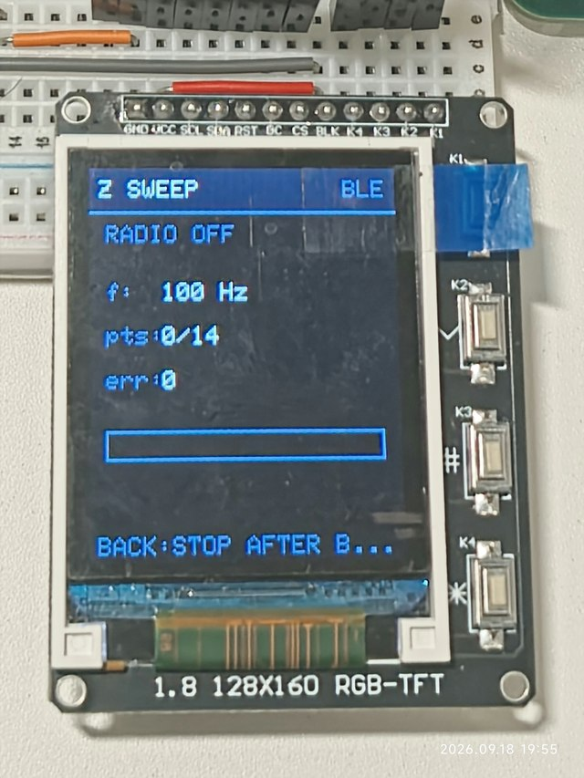
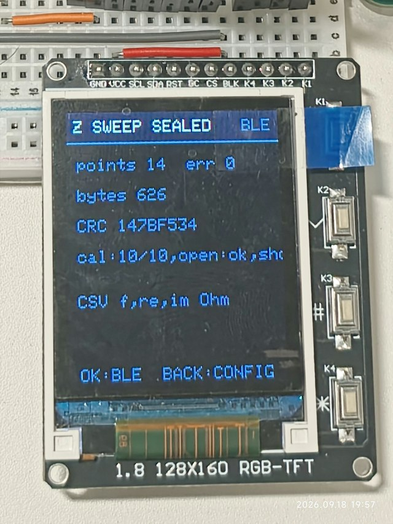
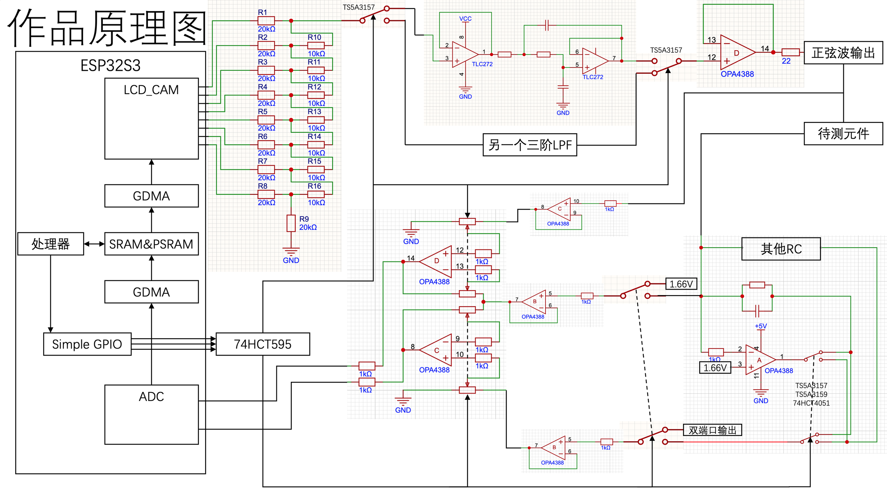
R测量范围：220毫欧-10兆欧
R误差：
100Hz 1k-300k:±1%
100Hz 47k-10M:±2%
大部分阻值和频率误差±3%以内，
大部分阻值和频率下相位差误差±1°以内。
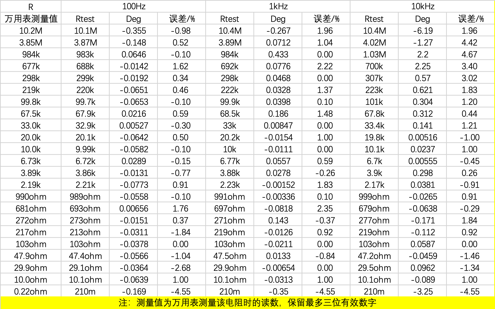
C测量范围：1pF-6.8mF
C误差：
10-100Hz下，3pF-100uF电容测量值均与标称值相差10%以内。
L测量范围：680nH-2H
L误差：
10Hz下，电感直流电阻与万用表直流测试基本一致。
10kHz下，5.6uH-100mH电感测量值均与标称值相差10%以内。
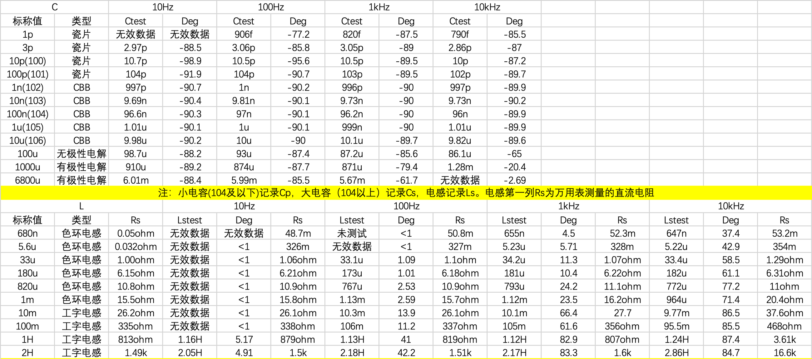
本仪器可以测量电容容量随频率的变化趋势。右图为测得4个1uF电容和2个10uF电容剩余容量随频率的变化趋势。
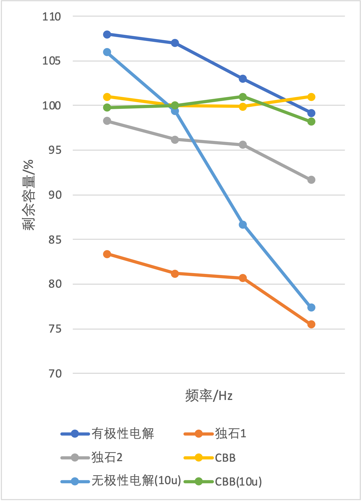
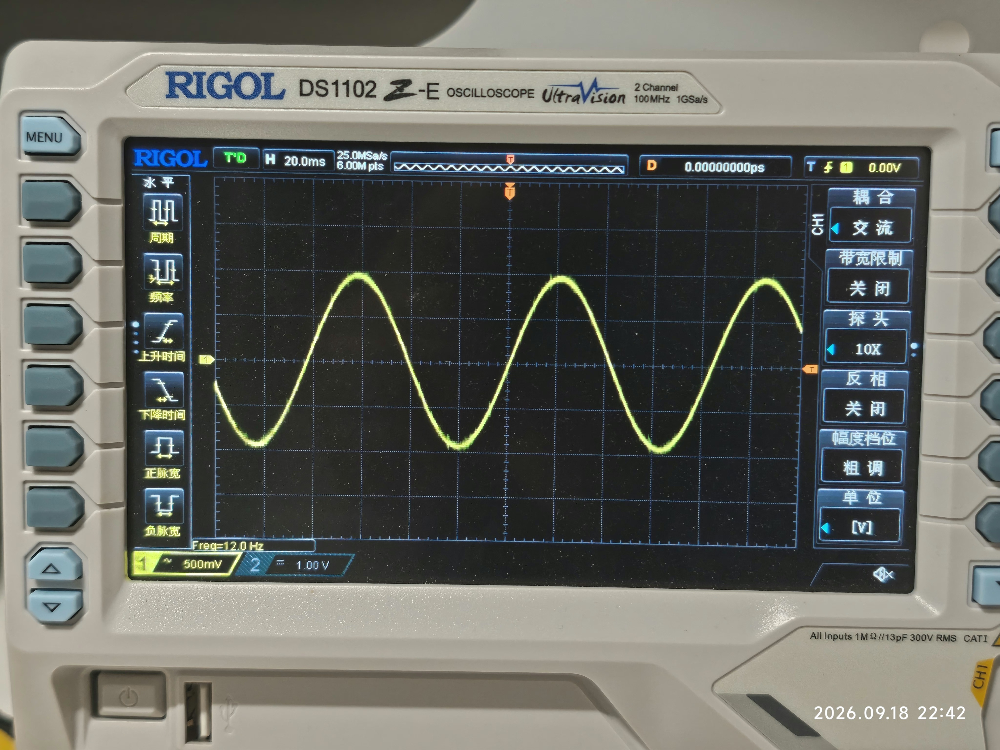
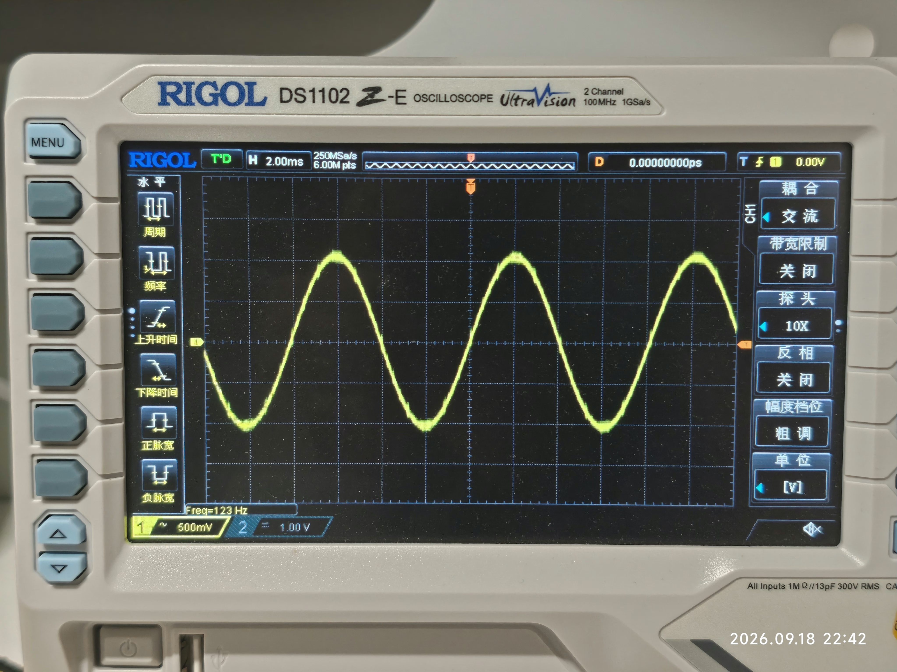
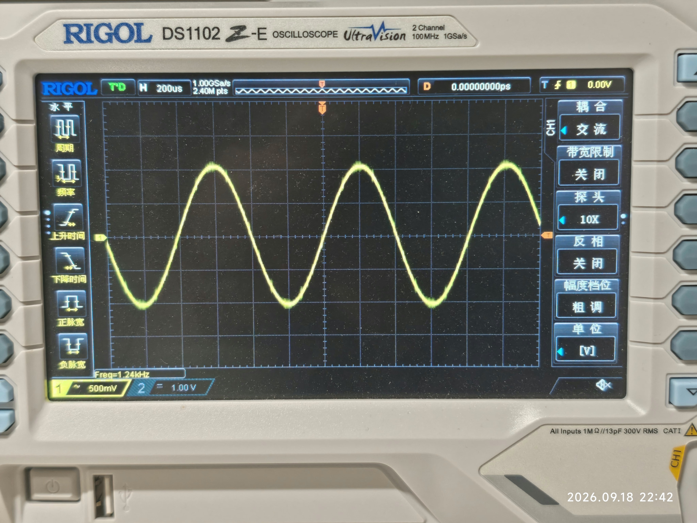
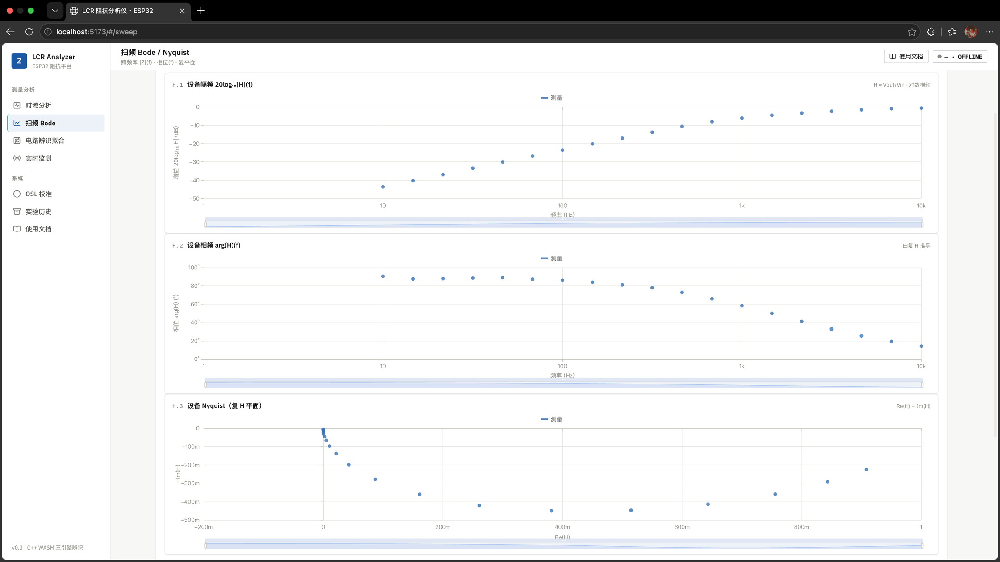
仪器完成测量后，数据可通过蓝牙（BLE）一键导入专用网页；全部计算均在浏览器本地完成，无需安装软件。网页与仪器配合使用，覆盖从查看测量结果到识别电路的完整流程。
按频点查看采样波形与频谱，读取该频点的阻抗测量结果。
绘制幅频 / 相频特性曲线，直观展示元件与网络的频率响应。
由扫频数据自动识别等效电路与元件参数，后两页详细展示。
统一管理历史测量记录，支持导出与随时复查。
内置说明文档，操作方法与数据格式随查随用。
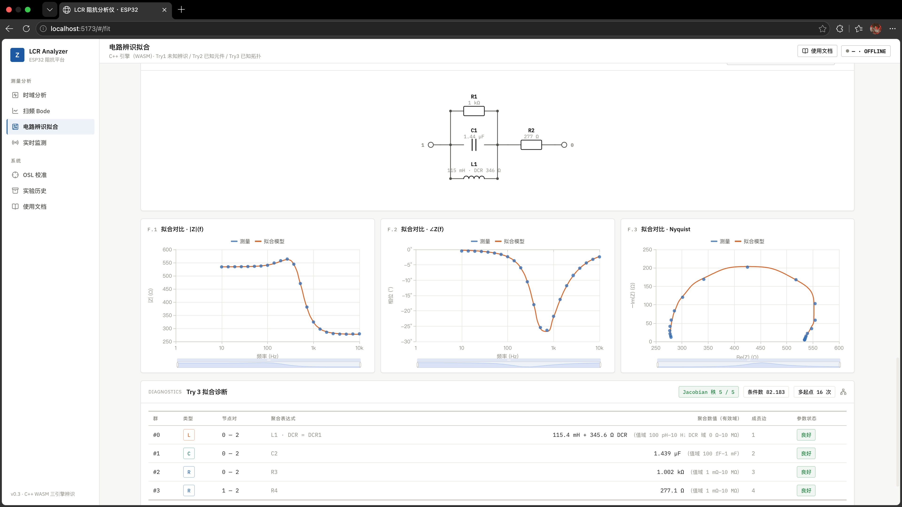
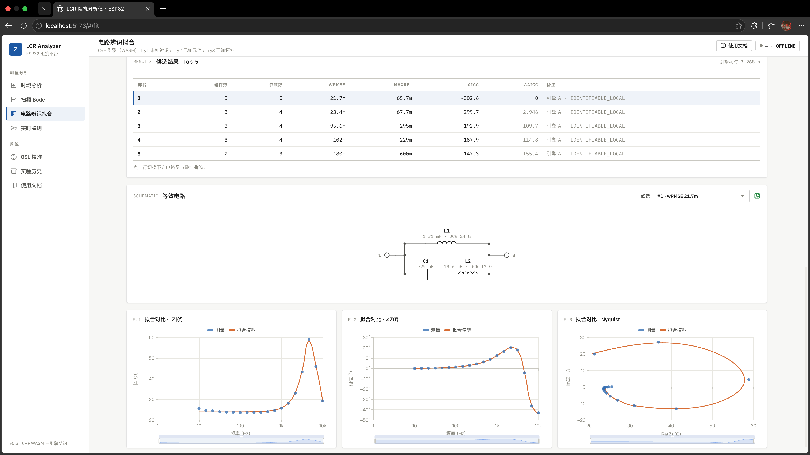
负责界面 / TFT、非阻塞状态机与扫频编排、BLE GATT 数据传输、数据集封装、设备端与网页联调，以及相关测试 / CI。
负责 Vue 前端、Web Bluetooth 接收、测量 / 扫频 / 拟合页面、WASM 桥接、拟合结果诊断与可视化、GitHub Pages 部署。
围绕 Try1 / Try2 / Try3 完成文献调研、理论建模与实现审计：图枚举 / 规范化、节点导纳前向模型、数值优化与 Jacobian、WASM 集成和验证。